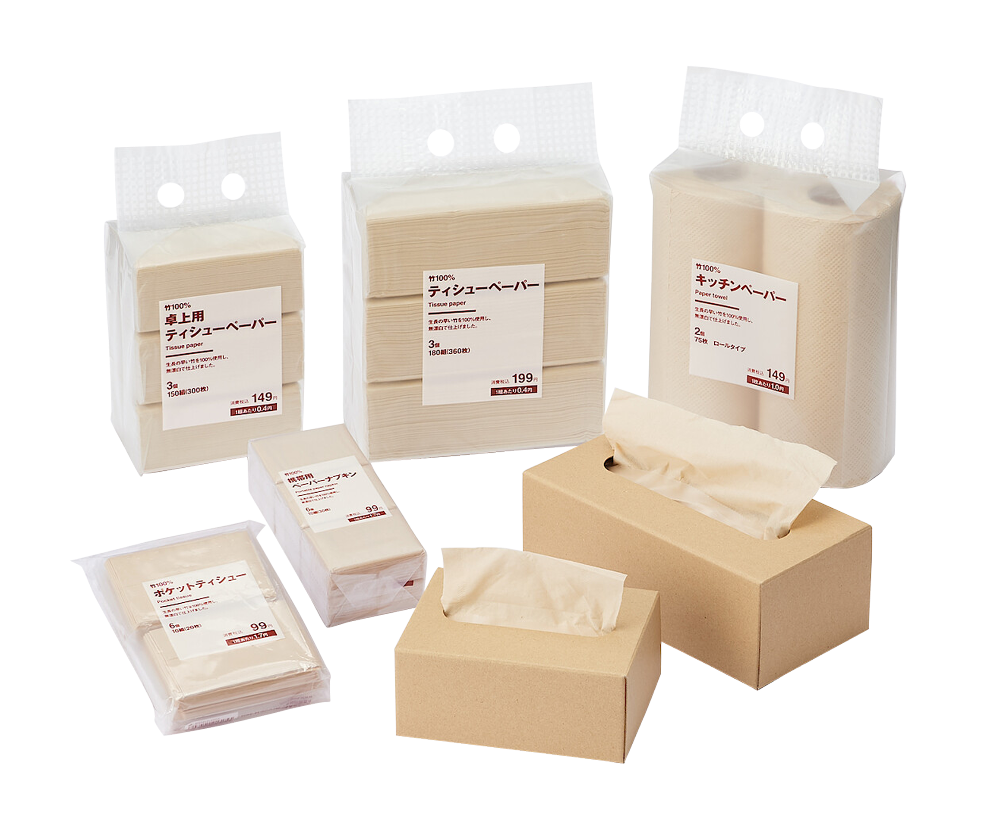

As MUJI’s director, Kenya Hara focused on “essence in simplicity”, designing everyday objects that add real value. He emphasized harmony of function and form, showing that design can enhance life beyond mere consumption.
"Sometimes simplicity
surpasses extravagance."
Kenya Hara’s design philosophy is not merely about creating beauty it seeks to restore the human senses and redefine our relationship with society.
Through the concepts of “emptiness” and “white,” his work invites us to reflect on true value and essence in a world overwhelmed by information and consumption. His design becomes an act of social consideration, offering a quiet but powerful vision for sustainable and harmonious living.
MUJI products are not designed in a way that requires users to understand every function in detail. Instead, the product comes to life and fulfills its function through the user's own intention and purpose.